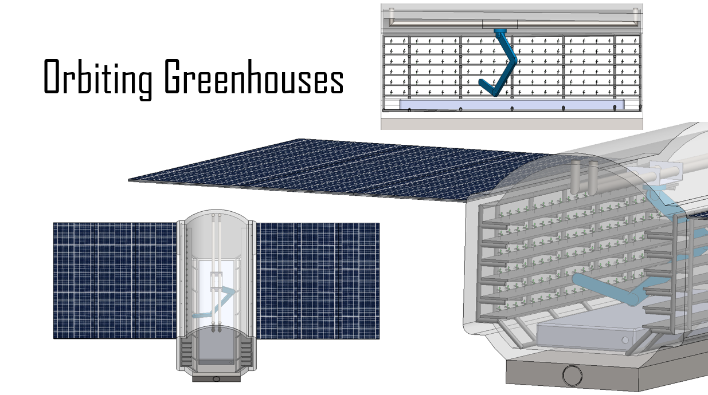

The Core Concept
The AMU is the foundational technology of the Awakened Imagination Group. It is conceived as a semi-autonomous, self-replicating orbital manufacturing platform — capable of producing copies of itself and manufacturing approved inventions for vendors and customers across the solar system.
Unlike existing space manufacturing concepts, the AMU was never designed for re-entry or low Earth orbit. It is conceived for the asteroid belt and deep space — operating in the gravity wells and resource-rich environments where scale and abundance become possible.
The AMU has the potential to be the most disruptive technology since the printing press. By manufacturing in space rather than on Earth, we can transition heavy industry off-world and allow Earth's biosphere to heal.
The 3-Stage Architecture
Stage 01
Main Manufacturing Site (MMS)
The adaptive core platform. Designed for self-replication and rapid on-orbit reconfiguration. Once deployed, a single MMS can produce copies of itself, enabling exponential scale without additional launch costs.
Stage 02
The Logistics Core
Integrated fuel reserves and high-cadence transporters engineered for the precision movement of manufactured goods, raw materials, and personnel across the Interplanetary Transport Network (ITN).
Stage 03
Reorientation & Re-tasking
Capable of on-orbit re-tasking for diverse manufacturing needs — from orbital greenhouses and bioreactors to compute infrastructure and habitat components. Strict hygienic protocol ensures zero-debris resource recovery.
Design Log
Initial core concept visualisation of the 3-stage AMU, developed in collaboration with the founding team.

Stage-2 AMU configured as a non-terrestrial food production facility. Submitted to Canada's Deep Space Food Challenge.

Early-stage technical breakdown of the AMU structure. Bridging from concept to simulation.
"The concept of the AMU has the potential to be the most revolutionary and disruptive idea since the creation of the printing press." — Adeel Khan, Founder
Get Involved
The AMU is an open-source endeavour. Engineers, ethicists, and visionaries are welcome to contribute to the design, simulation, and governance of this technology.
View Engineering Log → Sponsor the Mission →